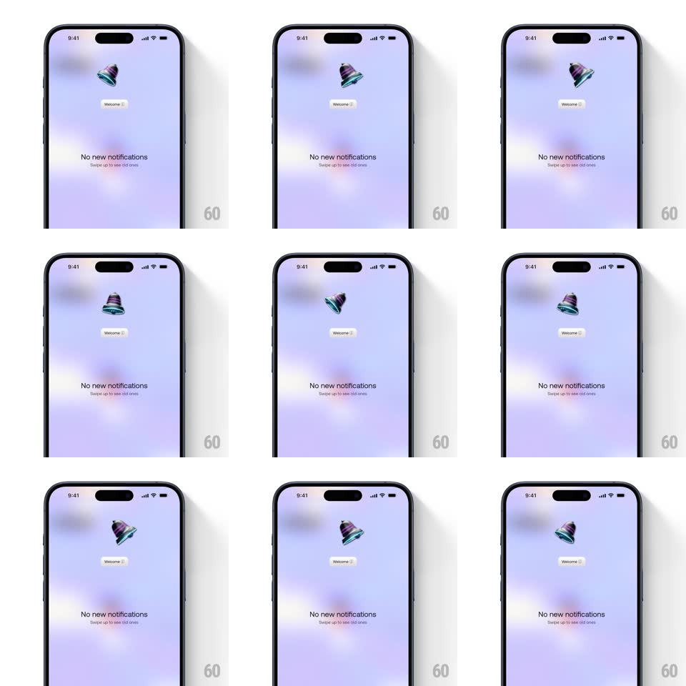

Media
Frame-by-frame

Rebuild this interaction 1:1: Bump's empty notification state - a 3D metallic bell swings gently side to side above a "Welcome" pill and the "No new notifications" message on a soft purple gradient.

Rebuild this interaction 1:1: Bump's empty notification state - a 3D metallic bell swings gently side to side above a "Welcome" pill and the "No new notifications" message on a soft purple gradient. ## Integration Integration: stack-agnostic spec - springs given as stiffness/damping, timed motions as duration + curve; map every value to your framework and animation library of choice. ## Scene Full screen, soft purple-blue gradient with blurry light blobs. Upper third: a small 3D bell (metallic, rainbow-sheen reflections). Under it a tiny "Welcome" pill, then centered gray text "No new notifications" with the subline "Swipe up to see old ones". ## Motion spec Pattern: looping pendulum swing. - The bell rotates around its top pivot: rotateZ -14deg -> +14deg and back, ~2.4s per full swing, ease-in-out at both extremes (pendulum timing - fastest at center). - The bell's body catches light as it swings: specular highlight sweeps across the metal in sync with the rotation. - A faint motion blur or ghost trails the bell only at the swing extremes (optional, subtle). - All text and the background gradient stay static. ## Calibration - Pendulum easing is essential - linear rotation reads as a metronome, not a bell. - Small amplitude (under 15deg); this is an idle state, not an alarm. ## Reduced motion Static bell at rest angle (0deg), no swing. ## Don't miss - The pivot is the bell's top loop, not its center. - The metallic rainbow sheen travels with the swing - the highlight is part of the motion.